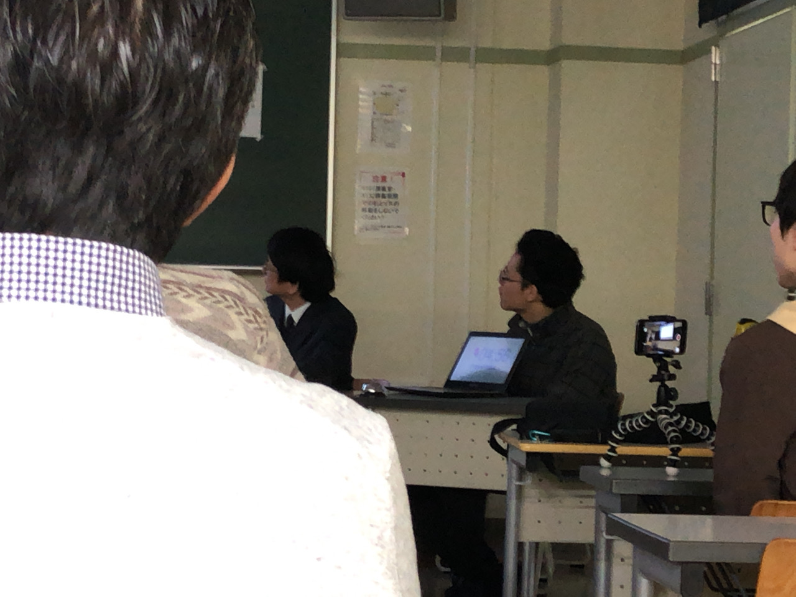
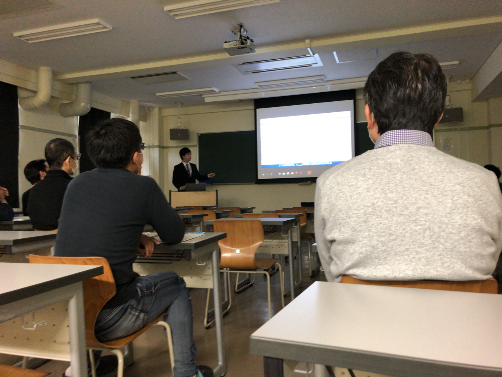
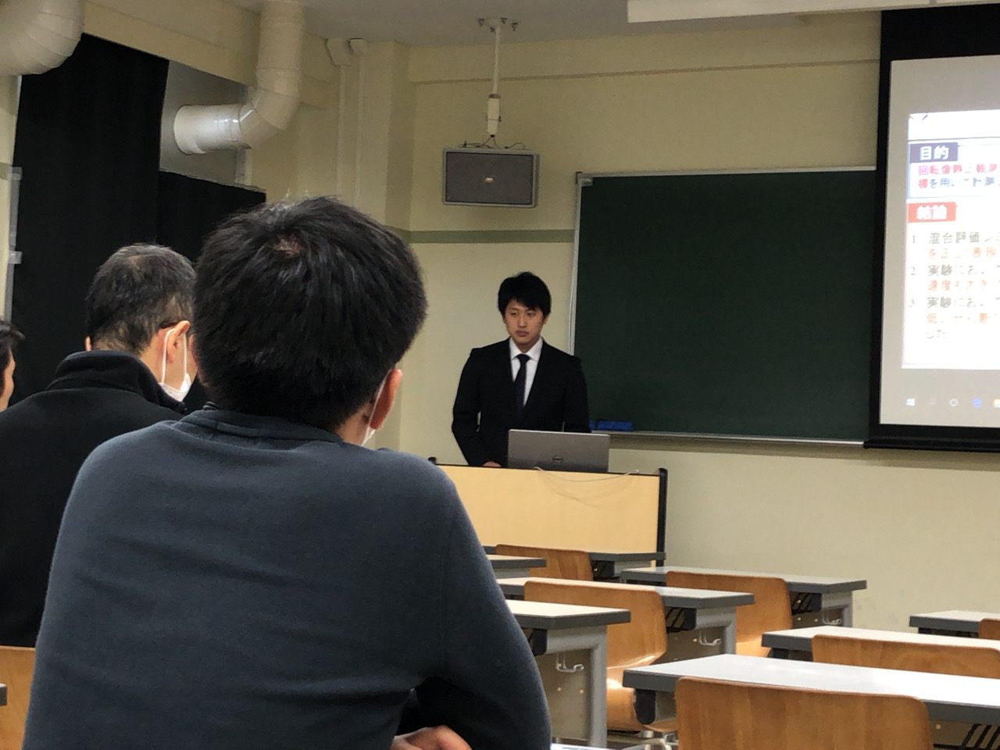
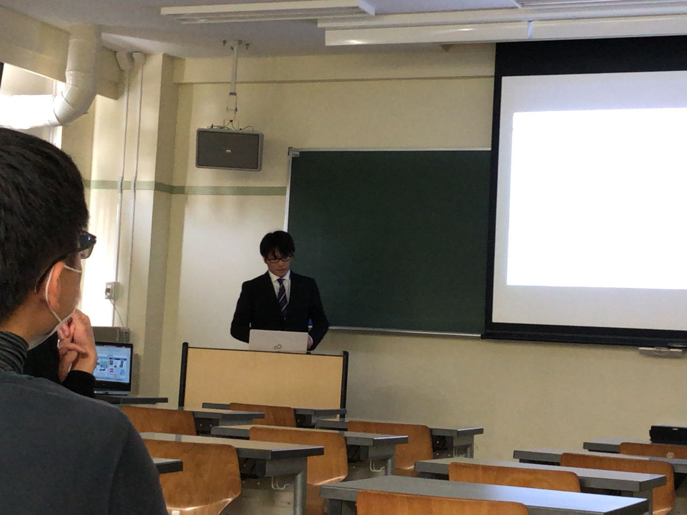
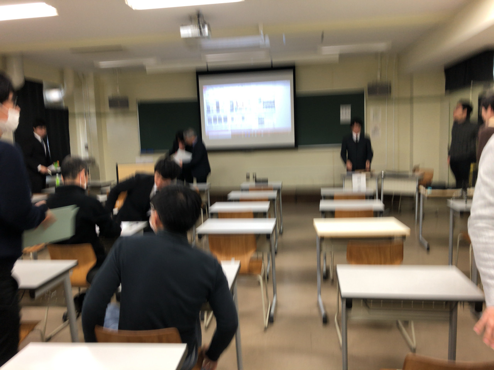
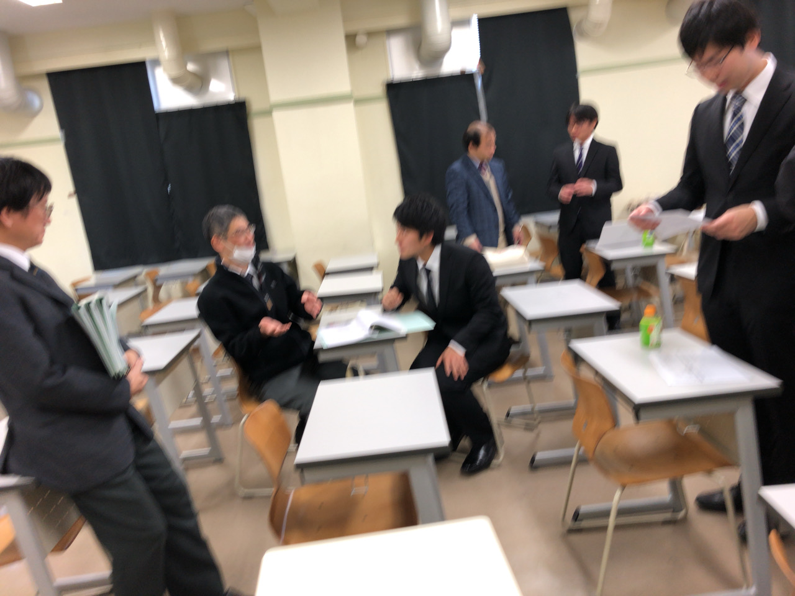

| ・ 令和元年度修士論文審査会 (R02.02.13) | |||
去年は5人で今年は3人発表。筆頭論文があったりこれまでの研究活動は充分なので、 今年も練習は1回であとは各自Fの部屋で練習です。それぞれのプレゼンスタイルが確立しているし、いろんな質疑の返し方もできるので、教員が何かできることはもうないです。 やったことが学位に値することをしっかりアピールしてください！ |
|||
|

計時の人は同じ |

T中さんの理論展開から | ||
|

T田さんに |

N谷さんと危なげなく | ||
|

おわり |

副査の先生方と議論の続き | ||